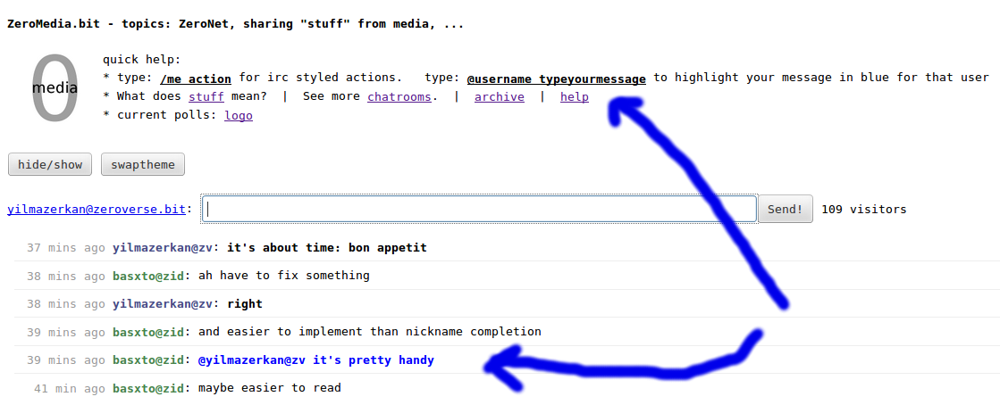
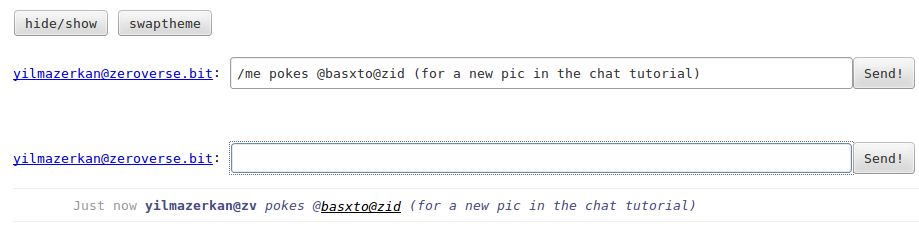
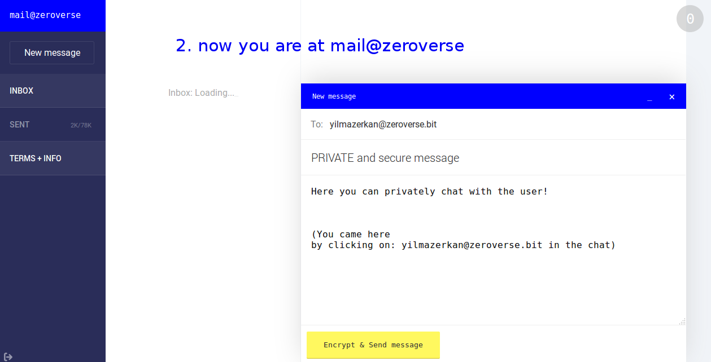

<h2>commands/help for the chat room: <u><b><a href="/zeromedia.bit">ZeroMedia.bit</a> !</b></u></h2>

<br>

<li><a href="#click">save time: 1 click to paste the nick</a></li>
<li><a href="#highlight">highlight a message</a></li>
<li><a href="#me">the /me command</a></li>
<li><a href="#private">talk in private</a></li>

<br><br><br>

<a name="click"><h1>save time: 1 click to paste the nick</h1></a>

The 2 following pictures explain how you can paste the nick into the chat field - with 1 click.<br>
This saves us all time!
<br><br>


<br><br>


<br><br>

<a name="highlight"><h1>highlight a message</h1></a>

<br><br>
We are quite chatty (<a href="/zeromedia.bit/activity.html">activity stats</a>), so you can catch someone's attention when you mark a message to him in blue:
<br><br>




<br><br>

<a name="me"><h1>the /me command</h1></a>

<br><br>
The /me command makes your text font italic.<br>
Also, this only works when /me is written at begin, e.g. the /me in the middle of the text will just show in normal font.
<br><br>



<br><br>

<a name="private"><h1>talk in private</h1></a>


<br><br>
<ul>
Keep in mind: you must click on the full address (e.g. here yilmazerkan@zeroverse.bit)
<ul>
<li>this will NOT work with yilmazerkan@zid</li>
</ul>
We use in the chat for exact highlighting of users the shortened domains:
<ul>
<li>@zid (ZeroID)</li>
<li>@zv (ZeroVerse)</li>
</ul>
</ul>

<br><br>



<br><br>
<ul>
For the above smoothly to work, you must have logged in first at <a href="/mail.zeroverse.bit">mail@zeroverse</a>:
<ul>
<li>see the <a href="/mail.zeroverse.bit/faq.html">FAQ</a>, section: "After logging in: How can I test if mailing works?"</li>
</ul>
</ul>

<br><br>

<!-- ZeroMedia.bit / http://127.0.0.1:43110/zeromedia.bit/chat_commands.html -->
<!-- erkan@zeroid.bit -->

